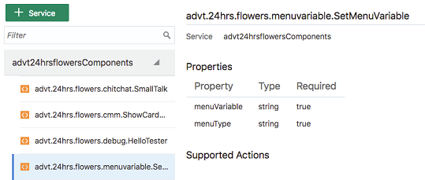
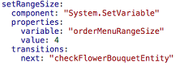
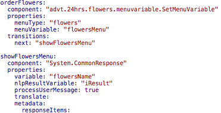
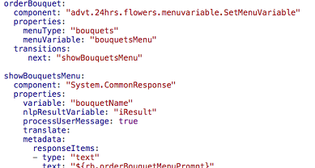
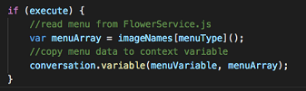
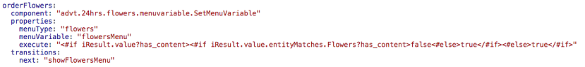
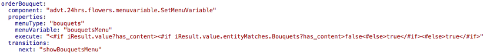

Oracle Intelligent Bots Advanced Training - Lab 5b (Implementing Custom Components)
Oracle Intelligent Bots Advanced Training - Lab 5b (Implementing Custom Components)Rendering user interfaces in bots with data served from a custom component is a popular use case. In this lab, we'll substitute the mock data used to populate the flowers and bouquets menus in the 24hrsflowers bot with data provided from a custom component.
For this we'll:
- Change the dialog flow by adding a reference to a custom component.
- Edit the custom component to add the missing logic.
 Prerequisites
Prerequisites
- Completion of lab 4a.
- A JavaScript IDE.
- ngrok running on your system.
 Change the Dialog Flow
Change the Dialog Flow
In the last lab, we left the local custom code test tools container running in debug mode. We'll continue using this setting.
- If you closed your ngrok and OMCe custom code test tools sessions from the previous part of this lab, start them again:
ngrok http 4000 omce-ccc >path to your custom component service toolsConfig.json file>/toolsConfig.json --debug
- Go to the
advt24hrsflowers_bot5<YourInitials>bot from the previous part of this lab and open it. - Train the bot (by clicking
 ).
). - Click
 in the left navigation for the bot to open the Components page.
in the left navigation for the bot to open the Components page.
Reminder: If you have restarted ngrok, you need to update the advt24hrsflowersComponents component service registration metadata field with the new hostname.
- Expand the advt24hrsflowersComponents list on the left.
- Select the advt.24hrs.flowers.menuvariable.SetMenuVariable menu entry.
Notice that this component requires two parameters: the name of a variable to save the menu content to and a menu type (which is "flowers" or "bouquets", though those values are not shown on the screen).
- Click
 to open the dialog flow editor.
to open the dialog flow editor. - Go to the
setFlowersMenuDatastate. - Replace the existing code with the code below:
setFlowersMenuData2: component: "advt.24hrs.flowers.menuvariable.SetMenu" properties: menuType: "flowers" menuVariable: "flowersMenu" transitions: next: "showFlowersMenu" - Click the Validate link and correct any errors that are detected (most likely to be indenting glitches).
- Go to the
setBouquetsMenuDatastate. - Replace the existing code with the code below:
setBouquetsMenuData: component: "advt.24hrs.flowers.menuvariable.SetMenuVariable" properties: menuType: "bouquets" menuVariable: "bouquetsMenu" transitions: next: "checkFlowerBouquetEntity" - Validate again.
What We Just Did
We have replaced the flowers and bouquets menu definitions with a reference to a custom component. The custom component, when invoked dynamically sets the flowers and bouquets menus to their respective variable.
At this point we can't run the bot, because the
 Implement the Custom Component
Implement the Custom Component
In this section, we'll add implementation code that allows the component to save the flowers and bouquets menus in a context variable.
- Open your JavaScript IDE and open the
advt24hrsflowerscss<YourUniqueInitials>folder. - Expand
js/components/tovariable/flowermenuand openSetMenu.js. - Notice the following line at the beginning of the file:
const menuItems= require('../data/FlowerService');This line references the
FlowerService.jsfile that holds the menu options for the flowers and the bouquets in this lab. TheFlowersService.jsfile is what you would need to change if you wanted to query the menu data from a remote service. - Also notice the
menuTypevariable definition.The
menuTypedefinition reads its value from the component properties. The allowed property values are"flowers"and"bouquets". Because the property is defined as mandatory in the metadata function of the custom component, there is no need to check for null values. - Position the mouse cursor in the space under the
conversation.logger()statement and add the following three lines of code:var menuArray = menuItems[menuType](); conversation.variable(menuVariable,menuArray); conversation.keepTurn(true);
- Save the file.
- Stop the local code container by by pressing
Ctrl-c(Windows) or Option-c (Mac) in the terminal window. - Then start it again with the
omce-ccc --debugcommand. - Go back to the bot in AMCe and open the tester (
 ).
). - Type
Hito start testing the component and follow the dialogs until you see either the Flowers or Bouquets menu. - Reset the tester.
- Type
I'd like to order 12 red roses.This time no menu is shown. The change we made to have a custom component serve the menu data did not change the bot behavior.
- Take 5-10 minutes to explore the custom component and the
FlowersService.jsfile. Also, for practice, you may want to debug the working application to better understand what is going on and what is contained in the variable.
The Code Explained
The custom component sets a JavaScript array back to the variable, the name of which has been passed as the value of the menuVariable property. The menuType property is set to flowers or bouquets. The following discusses the three code lines you added to make it work
var menuArray = imageNames[menuType]();- TheFlowersService.jsfile is a Node module that exposes two functions as attributes:flowersandbouquets. To access the function based on the attribute name saved in a variable you use square brackets ([]). This is like saying "resolve the variable value and call the attribute with that name".conversation.variable(menuVariable,menuArray);- Thevariable()function exposed on the custom component SDK (conversation) reads from or writes to context variables. This line of code actually makes the flowers or bouquets menu data available to the context variable.conversation.keepTurn(true);- This line of code answers the question to what the user should do next. SettingkeepTurntotrueanswers this question with "nothing". As the component only sets data, it doesn't require any user input until the dialog flow engine hits the next state. So havingkeepTurnset totrueensures that the dialog flow engine can get to the next state without waiting for any user input.
 Improve Bot Performance
Improve Bot Performance
So far, both context variables (flowersMenu and bouquetsMenu) always get populated with data, even though only one of them will be used.
With a simple change in the dialog flow, we can reduce the number of calls to the custom component and the size of the payload that is exchanged between the bot and its components. The performance gain won't be huge for the 24hrsflowers bot. But the sum of many little things can have a big impact. So let's go for this little optimization.
- In the dialog flow, navigate to the
setRangeSizestate. - Change the
transitions nextsetting of thesetRangeSizestate tocheckFlowerBouquetEntityso it bypasses the two states that set the menu data below.
 - Next, navigate to the
setFlowersMenuDatastate. - Cut the whole
setFlowersMenuDatastate from its current location and paste it above theorderFlowersstate. - Rename the
orderFlowersstate toshowFlowersMenu. - Rename the
setFlowersMenuDatastateorderFlowers. - Change the
transitions nextvalue oforderFlowersto"showFlowersMenu".The dialog flow should look as shown in the image below.
 - Next, navigate to the
setBouquetsMenuDatastate. - Cut the whole
setBouquetsMenuDatastate from its current location and paste it above theorderBouquetstate. - Rename the
orderBouquetstate toshowBouquetsMenu. - Rename the
setBouquetsMenuDatastateorderBouquet. - Change the
transitions nextvalue oforderBouquetto"showBouquetsMenu".The dialog flow should look as shown in the image below.
 - Open the tester () and test the order flow for both flowers and bouquets.
Be sure you also test that entity slotting still does what it is supposed to do.
What We Just Did
With some simple content adjustments, we have achieved a lot. We have:
- Reduced the number of calls to the custom component that populates the flowers and bouquets menus.
- By not populating the menu variable that is not required for a given user order flow, reduced the size of the payload that is exchanged between the bot and custom components.
 Optimize the setMenu Custom Component
Optimize the setMenu Custom Component
As a final optimization, we'll add a new component property (execute that takes a Boolean variable as an argument and that can be used to suppress populating the menu variable in cases where the user query already contains information about the flower or bouquet to order.
The execute property should be optional and default to true.
- If not still open, open the
SetMenu.jsfile in your JavaScript IDE. - Edit the
metadata:()function and add a new property:"execute": { "type": "boolean", "required": false }PK note: this property is already in the file; should it be removed?
- Next, edit the
invoke:()function and add the following code to read the property value if provided:const execute = conversation.properties().execute? conversation.properties().execute : true; conversation.logger().info('advt.24hrs.flowers.menuvariable.SetMenu: component execute set to ' +execute );PK note: this property is already in the file; should it be removed?
- Now wrap the
menuArrayvariable and the setting of the menu context variable in anifstatement as shown in the image below:
PK note: also commented out conversation.keepTurn(true);
- Save the file.
- Stop the local code container by by pressing
Ctrl-c(Windows) or Option-c (Mac) in the terminal window. - Restart the local container in debug mode:
omce-ccc >path to your custom component service toolsConfig.json file>/toolsConfig.json --debug
- In AMCe, go back to the bot and lick in the left navigation to open the Components page.
- Select the advt24hrsflowersComponents entry and click the Reload button.
- After a successful reload, select the
advt.24hrs.flowers.menuvariable.SetMenuVariablecomponent to verify that the new execute property shows. - Click to open the dialog flow editor.
- Navigate to the
orderFlowersstate. - Add the
executeproperty and assign the following Apache FreeMarker expression as its value so that it resolves totruewhen the Bouquet entity is not yet contained in theiResultvariable andfalseotherwise. Add the Apache FreeMarker expression in a single line.<#if iResult.value?has_content><#if iResult.value.entityMatches.Flowers?has_content>false<#else>true</#if><#else>true</#if>
The
orderFlowersstate should look like this:
 - Navigate to the
orderBouquetstate. - Add the
executeproperty and assign the following Apache FreeMarker expression as its value so that it resolves totruewhen the Bouquet entity is not yet contained in theiResultvariable andfalseotherwise. Add the Apache FreeMarker expression in a single line.<#if iResult.value?has_content><#if iResult.value.entityMatches.Bouquets?has_content>false<#else>true</#if><#else>true</#if>
The
orderBouquetstate should look like this:
 - Validate the dialog flow.
- Open the tester () and test the bot.
What We Just Did
- Added a custom component property that allows bot designers to conditionally skip querying menu data from the custom component.
- In the dialog flow, used Apache Freemarker to determine whether the user query contains a value for the Flowers or Bouquets entity. If a value is found, then the
executeproperty resolvesfalse. If no value is found, theexecuteproperty is set totruefor the menu data to be queried and set to the context variable.